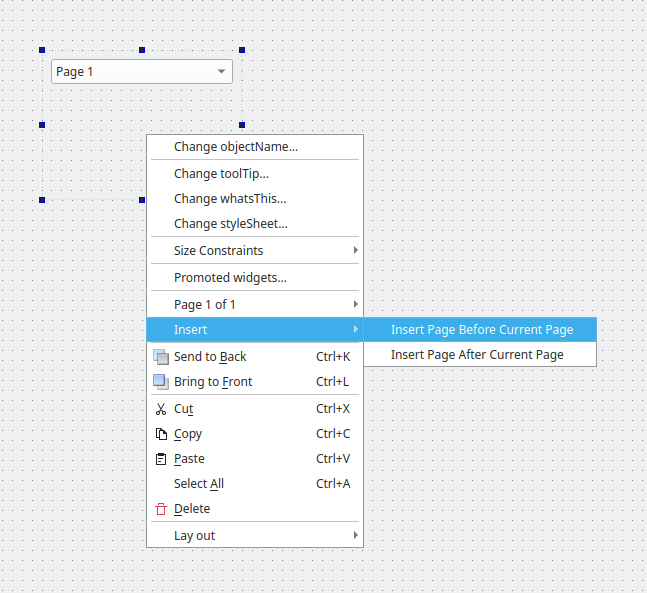

Container Extension Example
Creating a custom multi-page plugin for Qt Designer.
The Container Extension example shows how to create a custom multi-page plugin for Qt Designer using the QDesignerContainerExtension class.

To provide a custom widget that can be used with Qt Designer, we need to supply a self-contained implementation. In this example we use a custom multi-page widget designed to show the container extension feature.
An extension is an object which modifies the behavior of Qt Designer. The QDesignerContainerExtension enables Qt Designer to manage and manipulate a custom multi-page widget, i.e. adding and deleting pages to the widget.
There are four available types of extensions in Qt Designer:
- QDesignerMemberSheetExtension provides an extension that allows you to manipulate a widget's member functions which is displayed when configuring connections using Qt Designer's mode for editing signals and slots.
- QDesignerPropertySheetExtension provides an extension that allows you to manipulate a widget's properties which is displayed in Qt Designer's property editor.
- QDesignerTaskMenuExtension provides an extension that allows you to add custom menu entries to Qt Designer's task menu.
- QDesignerContainerExtension provides an extension that allows you to add (and delete) pages to a multi-page container plugin in Qt Designer.
You can use all the extensions following the same pattern as in this example, only replacing the respective extension base class. For more information, see Qt Designer C++ Classes.
The Container Extension example consists of four classes:
MultiPageWidgetis a custom container widget that lets the user manipulate and populate its pages, and navigate among these using a combobox.MultiPageWidgetPluginexposes theMultiPageWidgetclass to Qt Designer.MultiPageWidgetExtensionFactorycreates aMultiPageWidgetContainerExtensionobject.MultiPageWidgetContainerExtensionprovides the container extension.
Project files for custom widget plugins need some additional information to ensure that they will work within Qt Designer. For example, custom widget plugins rely on components supplied with Qt Designer, and this must be specified in the project files that we use. We will first take a look at the plugin's project files.
Then we will continue by reviewing the MultiPageWidgetPlugin class, and take a look at the MultiPageWidgetExtensionFactory and MultiPageWidgetContainerExtension classes. Finally, we will take a quick look at the MultiPageWidget class definition.
Project files
CMake
The project files need to state that a plugin linking to the Qt Designer libraries is to be built:
find_package(Qt6 REQUIRED COMPONENTS Core Designer Gui Widgets)
qt_add_plugin(containerextension)
target_link_libraries(containerextension PUBLIC
Qt::Core
Qt::Designer
Qt::Gui
Qt::Widgets
)
The following example shows how to add the header and source files of the widget:
target_sources(containerextension PRIVATE
multipagewidget.cpp multipagewidget.h
multipagewidgetcontainerextension.cpp multipagewidgetcontainerextension.h
multipagewidgetextensionfactory.cpp multipagewidgetextensionfactory.h
multipagewidgetplugin.cpp multipagewidgetplugin.h
)
We provide an implementation of the plugin interface so that Qt Designer can use the custom widget. In this particular example we also provide implementations of the container extension interface and the extension factory.
It is important to ensure that the plugin is installed in a location that is searched by Qt Designer. We do this by specifying a target path for the project and adding it to the list of items to install:
set(INSTALL_EXAMPLEDIR "${QT6_INSTALL_PREFIX}/${QT6_INSTALL_PLUGINS}/designer")
install(TARGETS containerextension
RUNTIME DESTINATION "${INSTALL_EXAMPLEDIR}"
BUNDLE DESTINATION "${INSTALL_EXAMPLEDIR}"
LIBRARY DESTINATION "${INSTALL_EXAMPLEDIR}"
)
The container extension is created as a library. It will be installed alongside the other Qt Designer plugins when the project is installed (using ninja install or an equivalent installation procedure).
For more information about plugins, see the How to Create Qt Plugins documentation.
qmake
The following example shows how to link a plugin to the Qt Designer libraries:
TEMPLATE = lib CONFIG += plugin QT += widgets designer
The following example shows how to add the header and source files of the widget:
HEADERS += multipagewidget.h \
multipagewidgetplugin.h \
multipagewidgetcontainerextension.h \
multipagewidgetextensionfactory.h
SOURCES += multipagewidget.cpp \
multipagewidgetplugin.cpp \
multipagewidgetcontainerextension.cpp \
multipagewidgetextensionfactory.cpp
OTHER_FILES += multipagewidget.json
The following example shows how to install a plugin to the Qt Designer's plugin path:
target.path = $$[QT_INSTALL_PLUGINS]/designer INSTALLS += target
MultiPageWidgetPlugin Class Definition
The MultiPageWidgetPlugin class exposes the MultiPageWidget class to Qt Designer. Its definition is similar to the Custom Widget Plugin example's plugin class which is explained in detail. The parts of the class definition that is specific to this particular custom widget is the class name and a couple of private slots:
#ifndef MULTIPAGEWIDGETPLUGIN_H #define MULTIPAGEWIDGETPLUGIN_H #include <QtUiPlugin/QDesignerCustomWidgetInterface> class QIcon; class QWidget; class MultiPageWidgetPlugin: public QObject, public QDesignerCustomWidgetInterface { Q_OBJECT Q_PLUGIN_METADATA(IID "org.qt-project.Qt.QDesignerCustomWidget") Q_INTERFACES(QDesignerCustomWidgetInterface) public: explicit MultiPageWidgetPlugin(QObject *parent = nullptr); QString name() const override; QString group() const override; QString toolTip() const override; QString whatsThis() const override; QString includeFile() const override; QIcon icon() const override; bool isContainer() const override; QWidget *createWidget(QWidget *parent) override; bool isInitialized() const override; void initialize(QDesignerFormEditorInterface *formEditor) override; QString domXml() const override; private slots: void currentIndexChanged(int index); void pageTitleChanged(const QString &title); private: bool initialized = false; }; #endif
The plugin class provides Qt Designer with basic information about our plugin, such as its class name and its include file. Furthermore it knows how to create instances of the MultiPageWidget widget. MultiPageWidgetPlugin also defines the initialize() function which is called after the plugin is loaded into Qt Designer. The function's QDesignerFormEditorInterface parameter provides the plugin with a gateway to all of Qt Designer's API's.
In the case of a multipage widget such as ours, we must also implement two private slots, currentIndexChanged() and pageTitleChanged(), to be able to update Qt Designer's property editor whenever the user views another page or changes one of the page titles. To be able to give each page their own title, we have chosen to use the QWidget::windowTitle property to store the page title (for more information see the MultiPageWidget class implementation in containerextension/multipagewidget.cpp. Note that currently there is no way of adding a custom property (for example, a page title) to the pages without using a predefined property as placeholder.
The MultiPageWidgetPlugin class inherits from both QObject and QDesignerCustomWidgetInterface. It is important to remember, when using multiple inheritance, to ensure that all the interfaces (i.e. the classes that doesn't inherit Q_OBJECT) are made known to the meta object system using the Q_INTERFACES() macro. This enables Qt Designer to use qobject_cast() to query for supported interfaces using nothing but a QObject pointer.
To ensure that Qt recognizes the widget as a plugin, export relevant information about the widget by adding the Q_PLUGIN_METADATA() macro:
Q_PLUGIN_METADATA(IID "org.qt-project.Qt.QDesignerCustomWidget")
With this macro, Qt Designer can access and construct the custom widget. Without this macro, there is no way for Qt Designer to use the widget.
MultiPageWidgetPlugin Class Implementation
The MultiPageWidgetPlugin class implementation is in most parts equivalent to the Custom Widget Plugin example's plugin class:
MultiPageWidgetPlugin::MultiPageWidgetPlugin(QObject *parent) : QObject(parent) { } QString MultiPageWidgetPlugin::name() const { return u"MultiPageWidget"_s; } QString MultiPageWidgetPlugin::group() const { return u"Display Widgets [Examples]"_s; } QString MultiPageWidgetPlugin::toolTip() const { return {}; } QString MultiPageWidgetPlugin::whatsThis() const { return {}; } QString MultiPageWidgetPlugin::includeFile() const { return u"multipagewidget.h"_s; } QIcon MultiPageWidgetPlugin::icon() const { return {}; } bool MultiPageWidgetPlugin::isInitialized() const { return initialized; }
One of the functions that differ is the isContainer() function which returns true in this example since our custom widget is intended to be used as a container.
bool MultiPageWidgetPlugin::isContainer() const { return true; }
Another function that differ is the function creating our custom widget:
QWidget *MultiPageWidgetPlugin::createWidget(QWidget *parent) { auto *widget = new MultiPageWidget(parent); connect(widget, &MultiPageWidget::currentIndexChanged, this, &MultiPageWidgetPlugin::currentIndexChanged); connect(widget, &MultiPageWidget::pageTitleChanged, this, &MultiPageWidgetPlugin::pageTitleChanged); return widget; }
In addition to create and return the widget, we connect our custom container widget's currentIndexChanged() signal to the plugin's currentIndexChanged() slot to ensure that Qt Designer's property editor is updated whenever the user views another page. We also connect the widget's pageTitleChanged() signal to the plugin's pageTitleChanged() slot.
The currentIndexChanged() slot is called whenever our custom widget's currentIndexChanged() signal is emitted, i.e. whenever the user views another page:
void MultiPageWidgetPlugin::currentIndexChanged(int index) { Q_UNUSED(index); auto *widget = qobject_cast<MultiPageWidget*>(sender());
First, we retrieve the object emitting the signal using the QObject::sender() and qobject_cast() functions. If it's called in a slot activated by a signal, QObject::sender() returns a pointer to the object that sent the signal; otherwise it returns 0.
if (widget) {
auto *form = QDesignerFormWindowInterface::findFormWindow(widget);
if (form)
form->emitSelectionChanged();
}
}
Once we have the widget we can update the property editor. Qt Designer uses the QDesignerPropertySheetExtension class to feed its property editor, and whenever a widget is selected in its workspace, Qt Designer will query for the widget's property sheet extension and update the property editor.
So what we want to achieve is to notify Qt Designer that our widget's internal selection has changed: First we use the static QDesignerFormWindowInterface::findFormWindow() function to retrieve the QDesignerFormWindowInterface object containing the widget. The QDesignerFormWindowInterface class allows you to query and manipulate form windows appearing in Qt Designer's workspace. Then, all we have to do is to emit its emitSelectionChanged() signal, forcing an update of the property editor.
When changing a page title a generic refresh of the property editor is not enough because it is actually the page's property extension that needs to be updated. For that reason we need to access the QDesignerPropertySheetExtension object for the page which title we want to change. The QDesignerPropertySheetExtension class also allows you to manipulate a widget's properties, but to get hold of the extension we must first retrieve access to Qt Designer's extension manager:
void MultiPageWidgetPlugin::pageTitleChanged(const QString &title) { Q_UNUSED(title); auto *widget = qobject_cast<MultiPageWidget*>(sender()); if (widget) { auto *page = widget->widget(widget->currentIndex()); auto *form = QDesignerFormWindowInterface::findFormWindow(widget);
Again we first retrieve the widget emitting the signal, using the QObject::sender() and qobject_cast() functions. Then we retrieve the current page from the widget that emitted the signal, and we use the static QDesignerFormWindowInterface::findFormWindow() function to retrieve the form containing our widget.
auto *editor = form->core();
auto *manager = editor->extensionManager();
Now that we have the form window, the QDesignerFormWindowInterface class provides the core() function which returns the current QDesignerFormEditorInterface object. The QDesignerFormEditorInterface class allows you to access Qt Designer's various components. In particular, the QDesignerFormEditorInterface::extensionManager() function returns a reference to the current extension manager.
auto *sheet = qt_extension<QDesignerPropertySheetExtension*>(manager, page);
const int propertyIndex = sheet->indexOf(QLatin1String("windowTitle"));
sheet->setChanged(propertyIndex, true);
}
}
}
Once we have the extension manager we can update the extension sheet: First we retrieve the property extension for the page which title we want to change, using the qt_extension() function. Then we retrieve the index for the page title using the QDesignerPropertySheetExtension::indexOf() function. As previously mentioned, we have chosen to use the QWidget::windowTitle property to store the page title (for more information see the MultiPageWidget class implementation in containerextension/multipagewidget.cpp. Finally, we implicitly force an update of the page's property sheet by calling the QDesignerPropertySheetExtension::setChanged() function.
void MultiPageWidgetPlugin::initialize(QDesignerFormEditorInterface *formEditor) { if (initialized) return;
Note also the initialize() function: The initialize() function takes a QDesignerFormEditorInterface object as argument.
auto *manager = formEditor->extensionManager();
When creating extensions associated with custom widget plugins, we need to access Qt Designer's current extension manager which we retrieve from the QDesignerFormEditorInterface parameter.
In addition to allowing you to manipulate a widget's properties, the QExtensionManager class provides extension management facilities for Qt Designer. Using Qt Designer's current extension manager you can retrieve the extension for a given object. You can also register and unregister an extension for a given object. Remember that an extension is an object which modifies the behavior of Qt Designer.
When registrering an extension, it is actually the associated extension factory that is registered. In Qt Designer, extension factories are used to look up and create named extensions as they are required. So, in this example, the container extension itself is not created until Qt Designer must know whether the associated widget is a container, or not.
auto *factory = new MultiPageWidgetExtensionFactory(manager);
Q_ASSERT(manager != nullptr);
manager->registerExtensions(factory, Q_TYPEID(QDesignerContainerExtension));
initialized = true;
}
We create a MultiPageWidgetExtensionFactory object that we register using Qt Designer's current extension manager retrieved from the QDesignerFormEditorInterface parameter. The first argument is the newly created factory and the second argument is an extension identifier which is a string. The Q_TYPEID() macro simply convert the string into a QLatin1String.
The MultiPageWidgetExtensionFactory class is a subclass of QExtensionFactory. When Qt Designer must know whether a widget is a container, or not, Qt Designer's extension manager will run through all its registered factories invoking the first one which is able to create a container extension for that widget. This factory will in turn create a MultiPageWidgetExtension object.
QString MultiPageWidgetPlugin::domXml() const { return uR"( <ui language="c++"> <widget class="MultiPageWidget" name="multipagewidget"> <widget class="QWidget" name="page"/> </widget> <customwidgets> <customwidget> <class>MultiPageWidget</class> <extends>QWidget</extends> <addpagemethod>addPage</addpagemethod> </customwidget> </customwidgets> </ui>)"_s; }
Finally, take a look at the domXml() function. This function includes default settings for the widget in the standard XML format used by Qt Designer. In this case, we specify the container's first page; any inital pages of a multi-page widget must be specified within this function.
MultiPageWidgetExtensionFactory Class Definition
The MultiPageWidgetExtensionFactory class inherits QExtensionFactory which provides a standard extension factory for Qt Designer.
class MultiPageWidgetExtensionFactory: public QExtensionFactory { Q_OBJECT public: explicit MultiPageWidgetExtensionFactory(QExtensionManager *parent = nullptr); protected: QObject *createExtension(QObject *object, const QString &iid, QObject *parent) const override; };
The subclass's purpose is to reimplement the QExtensionFactory::createExtension() function, making it able to create a MultiPageWidget container extension.
MultiPageWidgetExtensionFactory Class Implementation
The class constructor simply calls the QExtensionFactory base class constructor:
MultiPageWidgetExtensionFactory::MultiPageWidgetExtensionFactory(QExtensionManager *parent) : QExtensionFactory(parent) {}
As described above, the factory is invoked when Qt Designer must know whether the associated widget is a container, or not.
QObject *MultiPageWidgetExtensionFactory::createExtension(QObject *object, const QString &iid, QObject *parent) const { auto *widget = qobject_cast<MultiPageWidget*>(object); if (widget && (iid == Q_TYPEID(QDesignerContainerExtension))) return new MultiPageWidgetContainerExtension(widget, parent); return nullptr; }
Qt Designer's behavior is the same whether the requested extension is associated with a container, a member sheet, a property sheet or a task menu: Its extension manager runs through all its registered extension factories calling createExtension() for each until one responds by creating the requested extension.
So the first thing we do in MultiPageWidgetExtensionFactory::createExtension() is to check if the QObject, for which the extension is requested, is in fact a MultiPageWidget object. Then we check if the requested extension is a container extension.
If the object is a MultiPageWidget requesting a container extension, we create and return a MultiPageWidgetExtension object. Otherwise, we simply return a null pointer, allowing Qt Designer's extension manager to continue its search through the registered factories.
MultiPageWidgetContainerExtension Class Definition
The MultiPageWidgetContainerExtension class inherits QDesignerContainerExtension which allows you to add (and delete) pages to a multi-page container plugin in Qt Designer.
class MultiPageWidgetContainerExtension: public QObject, public QDesignerContainerExtension { Q_OBJECT Q_INTERFACES(QDesignerContainerExtension) public: explicit MultiPageWidgetContainerExtension(MultiPageWidget *widget, QObject *parent); bool canAddWidget() const override; void addWidget(QWidget *widget) override; int count() const override; int currentIndex() const override; void insertWidget(int index, QWidget *widget) override; bool canRemove(int index) const override; void remove(int index) override; void setCurrentIndex(int index) override; QWidget *widget(int index) const override; private: MultiPageWidget *myWidget; };
It is important to recognize that the QDesignerContainerExtension class only is intended to provide Qt Designer access to your custom multi-page widget's functionality; your custom multi-page widget must implement functionality corresponding to the extension's functions.
Note also that we implement a constructor that takes two arguments: the parent widget, and the MultiPageWidget object for which the task menu is requested.
QDesignerContainerExtension provides a couple of menu entries in Qt Designer's task menu by default, enabling the user to add or delete pages to the associated custom multi-page widget in Qt Designer's workspace.
MultiPageWidgetContainerExtension Class Implementation
In the constructor we save the reference to the MultiPageWidget object sent as parameter, i.e the widget associated with the extension. We will need this later to access the custom multi-page widget performing the requested actions.
MultiPageWidgetContainerExtension::MultiPageWidgetContainerExtension(MultiPageWidget *widget, QObject *parent) : QObject(parent) , myWidget(widget) { }
To fully enable Qt Designer to manage and manipulate your custom multi-page widget, you must reimplement all the functions of QDesignerContainerExtension:
bool MultiPageWidgetContainerExtension::canAddWidget() const { return true; } void MultiPageWidgetContainerExtension::addWidget(QWidget *widget) { myWidget->addPage(widget); } int MultiPageWidgetContainerExtension::count() const { return myWidget->count(); } int MultiPageWidgetContainerExtension::currentIndex() const { return myWidget->currentIndex(); }
You must reimplement canAddWidget() and addWidget() adding a given page to the container, count() returning the number of pages in the container, and currentIndex() returning the index of the currently selected page.
void MultiPageWidgetContainerExtension::insertWidget(int index, QWidget *widget) { myWidget->insertPage(index, widget); } bool MultiPageWidgetContainerExtension::canRemove(int index) const { Q_UNUSED(index); return true; } void MultiPageWidgetContainerExtension::remove(int index) { myWidget->removePage(index); } void MultiPageWidgetContainerExtension::setCurrentIndex(int index) { myWidget->setCurrentIndex(index); } QWidget* MultiPageWidgetContainerExtension::widget(int index) const { return myWidget->widget(index); }
You must reimplement insertWidget() adding a given page to the container at a given index, canRemove() and remove() deleting the page at a given index, setCurrentIndex() setting the index of the currently selected page, and finally widget() returning the page at a given index.
MultiPageWidget Class Definition
The MultiPageWidget class is a custom container widget that lets the user manipulate and populate its pages, and navigate among these using a combobox.
class MultiPageWidget : public QWidget { Q_OBJECT Q_PROPERTY(int currentIndex READ currentIndex WRITE setCurrentIndex) Q_PROPERTY(QString pageTitle READ pageTitle WRITE setPageTitle STORED false) public: explicit MultiPageWidget(QWidget *parent = nullptr); QSize sizeHint() const override; int count() const; int currentIndex() const; QWidget *widget(int index); QString pageTitle() const; public slots: void addPage(QWidget *page); void insertPage(int index, QWidget *page); void removePage(int index); void setPageTitle(const QString &newTitle); void setCurrentIndex(int index); private slots: void pageWindowTitleChanged(); signals: void currentIndexChanged(int index); void pageTitleChanged(const QString &title); private: QStackedWidget *stackWidget; QComboBox *comboBox; };
The main detail to observe is that your custom multi-page widget must implement functionality corresponding to the QDesignerContainerExtension's member functions since the QDesignerContainerExtension class only is intended to provide Qt Designer access to your custom multi-page widget's functionality.
In addition, we declare the currentIndex and pageTitle properties, and their associated set and get functions. By declaring these attributes as properties, we allow Qt Designer to manage them in the same way it manages the properties the MultiPageWidget widget inherits from QWidget and QObject, for example featuring the property editor.
Note the STORED attribute in the declaration of the pageTitle property: The STORED attribute indicates persistence, i.e. it declares whether the property's value must be remembered when storing an object's state. As mentioned above, we have chosen to store the page title using the QWidget::windowTitle property to be able to give each page their own title. For that reason the pageTitle property is a "fake" property, provided for editing purposes, and doesn't need to be stored.
We must also implement and emit the currentIndexChanged() and pageTitleChanged() signals to ensure that Qt Designer's property editor is updated whenever the user views another page or changes one of the page titles.
See the MultiPageWidget class implementation in containerextension/multipagewidget.cpp for more details.